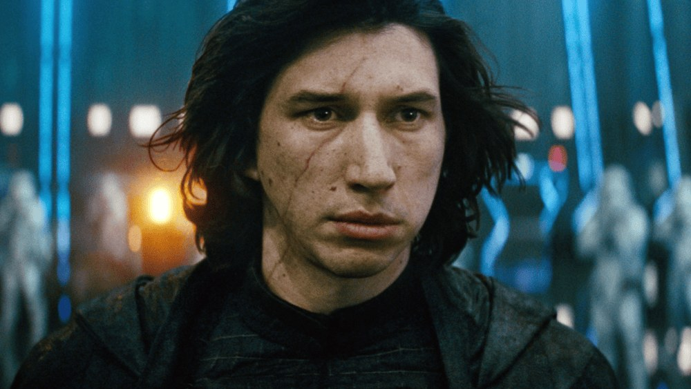
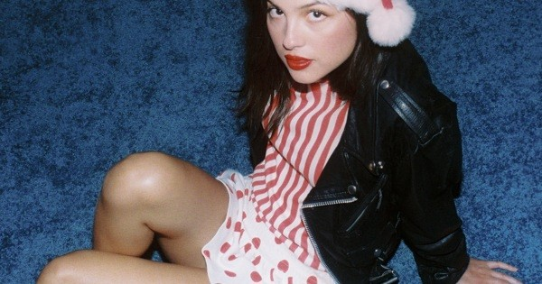
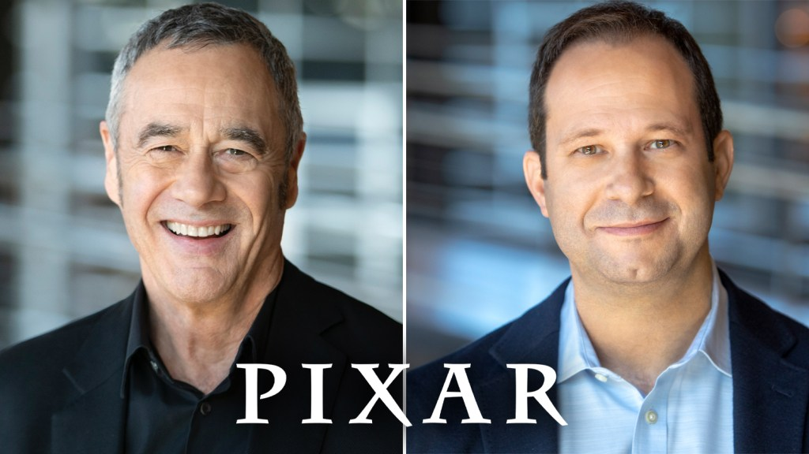

Adam Driver says The Hunt for Ben Solo is over: “No more Star Wars”

On The Rich Eisen Show, Driver shut down any hope of returning as Kylo Ren. “Yeah, it’s over… No more Star Wars,” he said. “We tried to do one more, but they’re like, ‘No, he’s dead.’” The secret Lucasfilm project he developed with Steven Soderbergh — and writers Scott Burns and Rebecca Blunt — never got past Disney studio bosses Bob Iger and Alan Bergman, who didn’t see how a redeemed Ben Solo could still be alive after The Rise of Skywalker.
Asked if he’d come back if Disney resurrected it, Driver said, “If they wanted to, fine. But… I think the ship has sailed.” Fans had flown “Save The Hunt for Ben Solo” banners over Disney’s Burbank lot after the cancellation leaked. There’s no new trailer — only the news — so the links below go to the coverage.
Olivia Rodrigo’s first Christmas song, Take Me Home (4 Christmas), drops tonight

The track arrives at 5 p.m. PT / 8 p.m. ET with a music video starring Rodrigo alongside Cynthia Nixon and SNL’s Ben Marshall. She wrote it with Dan Nigro and Amy Allen; Nigro produced. A 7-inch vinyl and cassette hit Target tomorrow, and the UK charts already have her in the Christmas No. 1 conversation.
It follows her “Expectations” remix with Chappell Roan and sits inside a busy year: her third album You Look Pretty Sad for a Girl So in Love, Daisy Chains Festival, and the ongoing Unraveled tour. The Spotify track isn’t live yet this morning — use the official release hub to pre-save, then stream after 8 p.m. ET.
Black Doves Season 2 is streaming now on Netflix
Keira Knightley returns as Helen Webb, still selling government secrets through the Black Doves while her husband Wallace (Andrew Buchan) moves closer to becoming Britain’s prime minister. Ben Whishaw’s Sam is back from the cold, Sarah Lancashire’s Mrs. Reed is under siege inside the organization, and new faces include Ambika Mod and Neve Campbell as a U.S. defense envoy.
Creator Joe Barton wrote all six episodes again; Julian Farino and Kieron Hawkes directed. Production shot across London, Paris, and Italy. If you need a refresher before diving in, the official trailer is below.
Pixar names Jonathan Garson president as Jim Morris moves to emeritus

Disney Entertainment Studios chair Alan Bergman announced the change Wednesday, effective Jan. 4, 2027. Garson will oversee Pixar’s production and operations alongside chief creative officer Pete Docter. Morris, president for 12 of his 21 years at the studio, becomes president emeritus and stays on as an executive producer of Incredibles 3.
Jonas Rivera also expands into a creative executive VP role leading filmmakers and development. Under Morris, Pixar features have generated more than $12 billion worldwide; the studio just rode Toy Story 5 past a billion and has originals Gatto and Ghost Market next. Bergman framed it as a planned succession, not a shake-up.
Bottom of the news
- Cynthia Erivo will play Tupac’s mother, Afeni Shakur, in Universal’s Snoop Dogg biopic Snoop, out Aug. 6, 2027, with Jonathan Daviss starring and Craig Brewer directing.
- Jordan Firstman’s A24 comedy Club Kid is at 100% on Rotten Tomatoes ahead of a limited Nov. 6 opening in New York and Los Angeles.
- Prime Video’s Muhammad Ali series The Greatest, from Michael B. Jordan’s Outlier Society and Jay-Z’s Roc Nation, is available now with Jaalen Best as young Cassius Clay.
- A24’s You Can See Everything held No. 1 at the domestic box office for a third weekend, edging Warner Bros.’ Clayface with about $11.4 million.
- Scarlett Johansson said her Batman role gave her “a lot of existential angst” and was “hard to crack.”
- Chucky creator Don Mancini blasted Nicki Minaj for an AI-looking MAGA election-day post featuring the doll, posting “IMPOSTER” and “Don’t f*ck with the Chuck!”
- Peter Farrelly’s I Play Rocky, with Anthony Ippolito as young Stallone, opens in limited theaters Friday; the new animated The Cat in the Hat (Bill Hader) also hits screens.
- Maya Hawke is set as the female lead in Hasbro and Legendary’s Magic: The Gathering movie.
- Parker Posey’s Southern-drawl “tsunami” clip from The White Lotus flooded feeds again as a meme for the Democrats’ midterm “blue wave.”